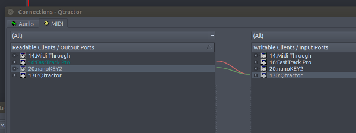
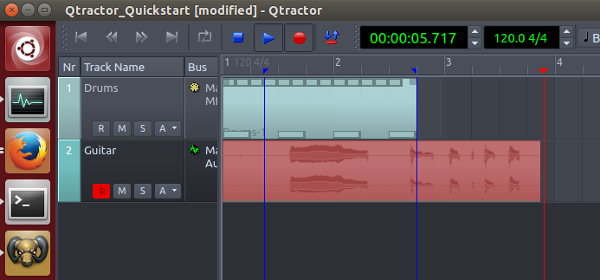

Qtractor QuickStart
Introduction
Qtractor can handle your MIDI and Audio tracks with sample-perfect precision, present you with a state of the art, industry standard mixer, complete with complex routing and effects, and allow you to record, mix and master your song all the way to the final bounce to a standard stereo recording tool. But this is not what we are going to do today.
Today, we are just going to get our feet wet. At the end of this session, you should have a drum track, that you can duplicate to create any other MIDI track, and an audio track, that, using the same technique, you can use to record any other audio source. Then we will move around the Qtractor timeline, play, pause, loop, setup some preferences, and export our work out to the joyful, honest and downright wonderful world of show business.
The DAW epitome
Up until recently, Rui Nuno Capela, the creator and main author of Qtractor, did not want to call it a DAW. Indeed, where almost every other similar tool end up encompassing every aspect of the audio & MIDI recording process, doing everything in-house from take to bounce, Qtractor takes the "one task, one tool" approach and, whenever possible, avoids doing what other tools can do better. As such, it fits perfectly into the GNU/Linux audio ecosystem. It (re)uses standard display widgets to provide a familiar and light user interface, as opposed to everyone else developping their own GUI paradigms. Big functions, like audio sample time-stretching, are handled by external libraries, elegantly integrated into a streamlined sequencer.
I personally have no problem calling Qtractor – that I've been using for almost a decade now – a DAW, and a great one at that.
Things we'll need
- Qtractor - obviously
- QJackCtl - optional - to setup JACK
- Calf Studio Gear - to get some instrument and effect plugins
- Audacity - to mix our song down to one big fat stereo PCM file
- The fluid-soundfont-gm free sound font bank - A (big) free soundfont - for our drum track, the bedrock of our song.
Those packages are more than probably already available in your GNU/Linux system, and installable though the specific package managing system it uses. However, if you are using a Debian-based system (come to think of it, you probably are) LMP warmly recommends the famous KXStudio repository, where you will find said software in their latest stable state.
Either way, to install all of it in a single command, just enter
apt install qtractor qjackctl calf-plugins audacity fluid-soundfont-gm
And you got yourself a studio, that will update automatically. Isn't grass greener on this side of the fence? ;)
Let's track some cues
Click the Qtractor icon, a wonderful "studio control cockpit" is hidden behind. Now quickly, before inspiration is gone, create your first track: Right-click in the empty left column, and choose "Add Track" or hit Ctrl+T.

In the resulting dialog, choose MIDI
Name your track "drums" and keep the number of the MIDI channel somewhere in your head (you can alway see it by double-clicking the track name anytime) and close the dialog.
Now open the mixer (F9) and right-click the plugin area, right below the name of the track. Select the "add plugin" menu entry.
In the plugin selection dialog, start to type "fluid" in the search field and BAM here it is: The Calf fluidsynth plugin.
Click on the file selector button labeled "soundfont" and navigate to /usr/share/sounds/sf2/FluidR3_GM.sf2 ; Pump the volume up to the max: 0db. Loud is good.
Click on the first selector (if the current track has MIDI channel 2 - double-click on the track name to check that - then that selector would be the second one) in the area labeled "channels" and descend aaall the way down where the drum kits are ; The first is called "Standard" use this one for now.
Close the plugin window. To access it again, double-click on its name in the plugin area of the track, in the mixer window. Select your track, and hit C (or use the menu entry Clip/new) to access the MIDI clip editor and... Oops, ah yes, don't forget to properly name your project, and keep it in a separate folder.
Sessions
A Qtractor session is, at a more technical level, an XML file, perfectly readable and editable, with relative pointers to separate MIDI and audio clip files.
Qtractor now needs to know where you want to keep those 3 things. Hence the rather imperative "Save that session NOW" dialog. Keep your session directory clean : When you drag & drop an odd external sample or MIDI file, first copy it inside to keep things self-contained. Now you can move your session around rigs by just copying this session directory.
The MIDI tracks
Ok, now our project lives in a cosy directory of his. Where were we... Yes, create MIDI notes. At this point, you can either create a new MIDI clip and enter notes with you mouse in the clip editor, or record new notes on the fly using your MIDI keyboard. Let's cover both methods.
The clip editor
To create a new clip, select your track, and hit C (or use the menu entry Clip/new). To edit an existing clip, just double-click on it.
- Click on the pianoroll notes to hear the sounds - the drum instruments are located between C1 and C6 ;
- Select your resolution by choosing "beat" in the upper-right unlabeled "note" menu in the button bar ;
- Select the "pencil" note entering tool in the button bar ;
- Enter notes by clicking in the clip pattern grid
- Select the "pointer move" note moving tool in the button bar to move existing notes.
Just click on a note to move it. At the bottom of the MIDI clip window, you can select the velocity of the notes. You can also access more MIDI parameters but his is beyond the scope of this tutorial.
Recording live MIDI
Connect your Keyboard: Click on the red "Connections" icon at the top of the main toobar ; Then locate your keyboard(s) and other MIDI control devices in the left pane, and connect them in the right pane to Qtractor "master" MIDI input by right-clicking on the names and choosing "connect". Then save your session, and those connections now belong to it.

Tip: Connect all your peripherals once for good in a template.qtt file that will load at each subsequent new session, and set it in the options dialog.
On the MIDI track you want to record, either in the timeline or in the mixer window, arm the track by pressing the first "R" button. Then in the main button bar, engage the red record button.
The RECORD buttons are now both engaged.
Now click on the blue "Play" arrow button (or hit space) and hit your MIDI keyboard.
The MIDI clip being created is red ; Right-click on you newly created MIDI clip, and select the "Clip/Loop set" menu entry. Engage the loop button in the main toolbar, hiy play, Now your clip is looping.
That's it for MIDI tracks, now you can create another one, but this time insert another plugin, such as the Calf Organ (you installed it earlier) and you now know how to enter notes in it.
The AUDIO tracks
Pluggin it in
Ok, so now, connect an instrument to you audio interface. A mic, a guitar, whatever. Then open the Connections window again, this time head to the Audio tab. Open the "system" node in the left pane: That's your audio card. Select one "capture" item, and connect it to both left and right "Master" Qtractor inputs in the right pane.
Recording audio
Now create an audio track, and select it. This is very important: If you want to hear something on any (MIDI or audio) track, it has to be selected. This is the default behaviour, and can be changed to manually monitor tracks, but again, this is above your paygrade. At this point the Vu-meters of both the master input bus and the track should move when you play or sing. Adjust the volume, then engage both track and main red record buttons. Now click on the "Play" blue arrow button (or hit space) and play some music. And please, remember, we humans tend to get bored if we can't dance to music once in a while.

That's it for audio tracks, now you can create another one, just remember to setup the connections in the aforementioned window.
And that's it about creating tracks! You will see that Qtractor, while being very powerful, doesn't get in the way and lets you do things quite simply. If only the mixer could be embedded just as the messages window is, or - even better yet - just the selected strip as in Ardour, allowing for a live-oriented "one-window" paradigm, that would be soo wonderful, wait, am I talking?
Living in the timeline
Shift+click in the ruler to position the playhead. Works in the thumbnail view, too ; Now ;
Open the shortcuts window by using the "Help/Shortcuts" menu entry. There, you will find the commands to
- Navigate between the 3 markers ;
- Play, pause, record, etc. ;
- Mute/Solo/Arm the track for recording
- Set the beat resolution
- Quantize, Randomize, Do stuff to your clips
- A lot of other functions that you need at your fingertips
Navigation
Click in the timeline "ruler" to position the left marker. Right-click to position the right marker. Now use the "Backward" and "Forward" buttons to "snap" the playhead (the red line) to either
- The start of the song ;
- the left marker ;
- the right marker ;
- the end of the song.
This is how one moves in the Qtractor timeline, and in both MIDI and audio clip editors. And now you know why it is useful to know the keyboard shortcut for "backwards" and "forward".
Tip: Shift-click anywhere in the timeline to position the playhead.
Here, the playhead is at the start of the song.
The clip selection modes
In the edit menu, you will find the four modes of selection:
- Clip: You select a clip (multi-select works, Ctrl and Shift act as usual) to move it around
- Range: You just drag the mouse to select an entire range across all the tracks
- Rectangle: A combination of the two previous modes
- Automation: When you click on a clip, it creates a control node for the selected automation curve.
If Qtractor starts to behave unpredictably, you may have accidentally changed selection modes, so watch out for this.
Tip: To select a range (in any mode) just hit Ctrl+R and it will select everything between the left and right markers.
In practice, you'll only use Clip and Automation modes, so either learn their respective keyboard shortcuts, or set you own.
The export
That's it! You now know how to create and edit MIDI and audio tracks. Once your song is done, launch Audacity, select JACK as the audio system, then Qtractor as the source, hit record. Then back to Qtractor, hit play. This is how it's done, by the way. That is how professional audio engineers mix down a song at the end of the mixing process.
Mastering
You can insert a mastering effects chain (such as the excellent Calf plugin suite) on either
- Qtractor "Master out" bus
- Between Qtractor and audacity (using the phabulous JAMin)
- Or any other mastering combination that I'm not sure I even want to think about
Conclusion
Qtractor is a wonderful production tool, that really shines after a few weeks of using and tweaking. If you want to see a particular Qtractor feature covered on LMP, just say it in the comments, otherwise just say hi, it's much appreciated!